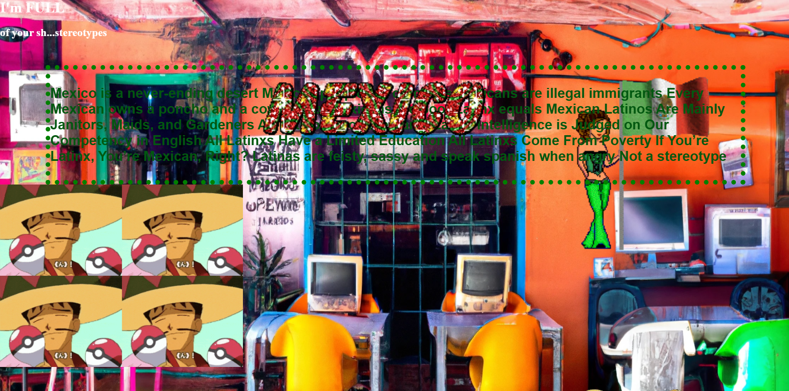

Planetary Atoll: Connecting Latin American Dots
Net-Art Website + AI, Installation
Panke Gallery Berlin, Germany, 2022
Online, 2023
"Born into BIAS" critically explores how AI image generators inherit and replicate societal stereotypes. Through a series of visual prompts and outputs, the project reveals the embedded prejudices and systemic biases within supposedly "neutral" technological systems.
By showcasing these generated images, the work opens a dialogue about representation, algorithmic discrimination, and the urgent need for critical engagement with AI tools.